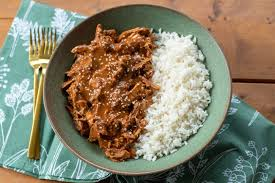

Mole
Odin Recipes
Home
Ceviche
HotDogs
Mole

Delicious Mole with a side of Rice
This recipe originated in the city of Oaxaca. Oaxaca is a city in Mexico where the recipe originated. It a complex sauce that takes hours to make. Luckily for us most grocery stores carry the sauce which makes it easy for anybody to enjoy.
I will be showing you the ingrediants needed in order to make this delicous meal with only 4 main ingrediants:
-
Rice
-
Mole Sauce
-
Chicken Breast
-
Tortillas
-
Additional but not needed
- Salt
- Pepper Flakes
- Chilies
- Any seasoning you desire
Now that you have all your ingrediants, let's get to the fun part, Cooking.
Follow this step by step for a great end result
- Start by adding your rice to a pot and begin cooking
- Boil another pot of water and add your chicken to the boiling pot.
- After 10 minutes of chicken cooking begin preping sauce
- For the sauce you want to add to a pan and begin to simmer. Follow instruction on the sauce containter
- After chicken is done, add chicken to sauce and stir
- You are now done. All you have to do is warm up those tortillas and plate your rice and chicken like the picture above.
Enjoy your meal!